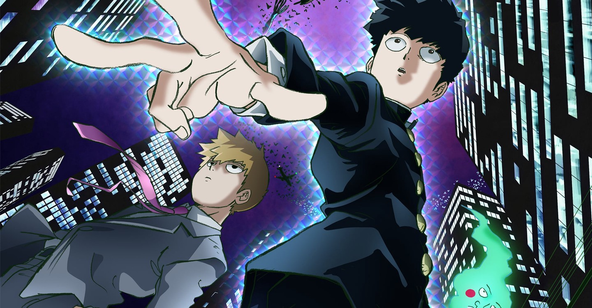
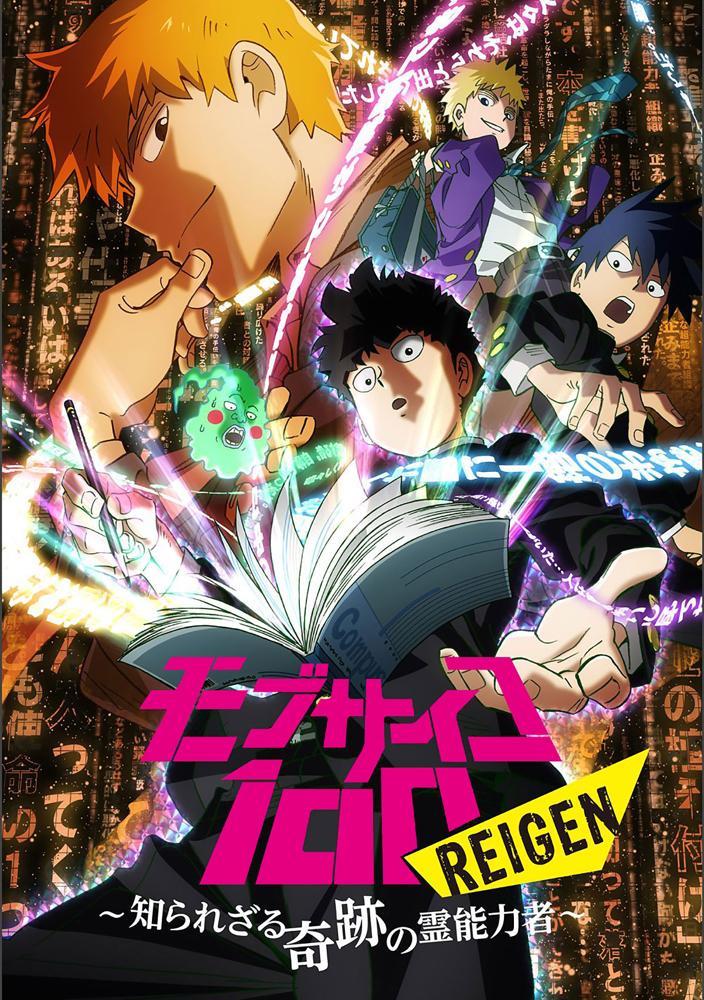
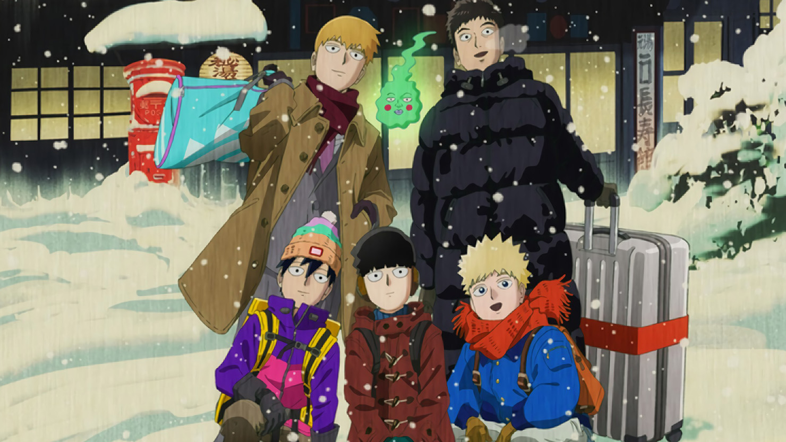

Моб Психо 100 (Mob Psycho 100, モブサイコ100) - это веб-манга созданная художником под псевдонимом ONE. 2012 году вышла манга, в которой 16 томов. По состоянию на июль 2016 года тираж манги составил более 1,2 миллиона экземпляров. В 2017 году на 62-ой премии Shogakukan, манга получила награду в категории сёнэн. Студия Bones выпустила адаптацию аниме-телесериала. Первый сезон вышел в эфир в период с июля по сентябрь 2016 года, за которым последовал второй сезон, вышедший в эфир в период с января по апрель 2019 года. 20 октября 2021 года был анонсирован третий сезон.
История рассказывает об ученике средней школы Сигэо Кагэяме по прозвищу Моб, которое он получил за свою неприметность. История рассказывает об ученике средней школы Сигэо Кагэяме по прозвищу Моб, которое онполучил за свою неприметность, являясь могущественным экстрасенсом. Моб считает свои способности опасными и непроизвольно сдерживает эмоции, чтобы избежать потери контроля над собой. Пытается жить жизнью обычного человека, но его подавленные эмоции и экстрасенсорные способности периодически вырываются наружу.
Мир данного тайтла мало чем отличается от нашего, за исключением духов и экстрасенсов. Деятельность вторых не является чем-то экстраординарным в контексте этого аниме, а даже чем то обыденным. Обычные люди очень часто жалуются на всяческие сверхъестественные явления. Некоторые могут оказаться обычной выдумкой, которая лечится массажем, а другие могут быть вызваны настоящими духами. Изгоняют их конечно экстрасенсы, которые могут основывать свои агентва. Один из главных героев как раз является основателем такого экстрасенсорного агентства.
В 2018 после первого сезона вышел спешл. Называется "Моб Психо 100: Рэйгэн - Чудо-экстрасенс, которого никто не знает" Краткий пересказ событий первого сезона с новыми сценами и комментариями Аратаки Рейгена.
В 2019 после 2 сезона вышел OVA на DVD и Blu-ray дисках. Называется "Моб Психо 100: Путешествие, которое склеивает сердце и исцеляет душу" Хозяйка гостиницы у Источников Бородавкобога в префектуре Зебра приходит к Рейгену с просьбой выяснить причину странных слухов, которые сильно портят репутацию её заведения и грозят разорением. В итоге, Рейген, Моб, Ямочки и новый сотрудник «Консультаций по призракам и всякой всячине» Серидзава, а также Рицу с Теру отправляются в на первый взгляд легкую и приятную поездку на источники. Но Рейген и Сердзава засыпают в поезде и оказываются в параллельном мире…
1 сезон
2 сезон
3 сезон
Нажмите на кнопку чтобы, поменять имя